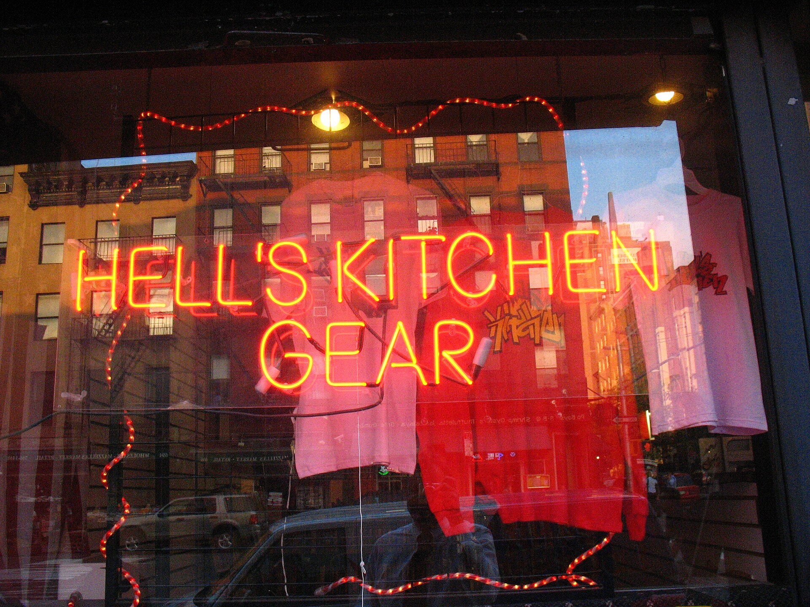
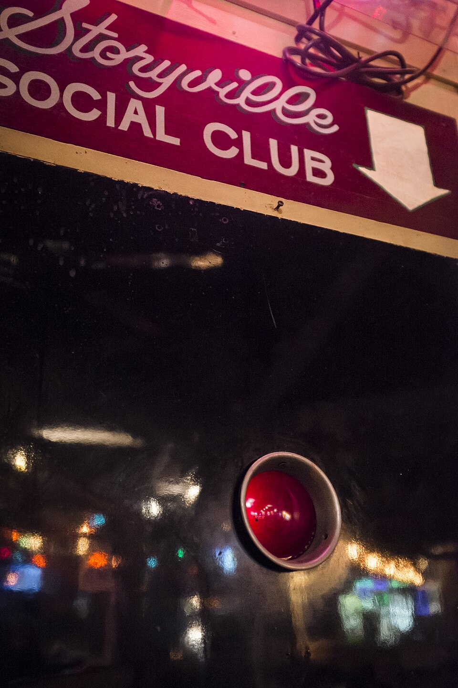
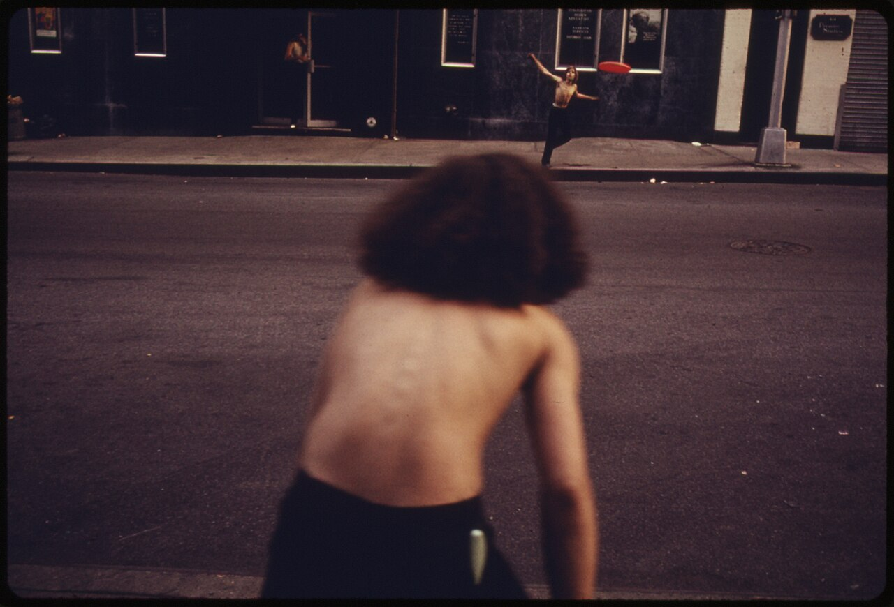
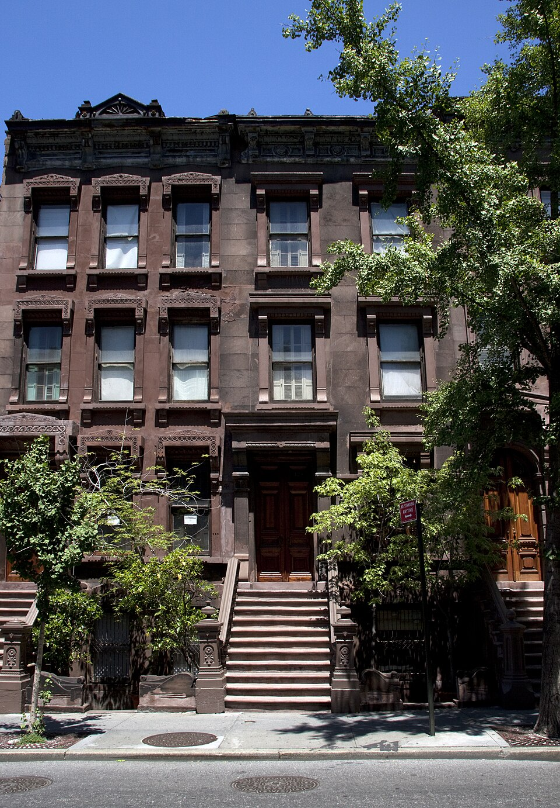
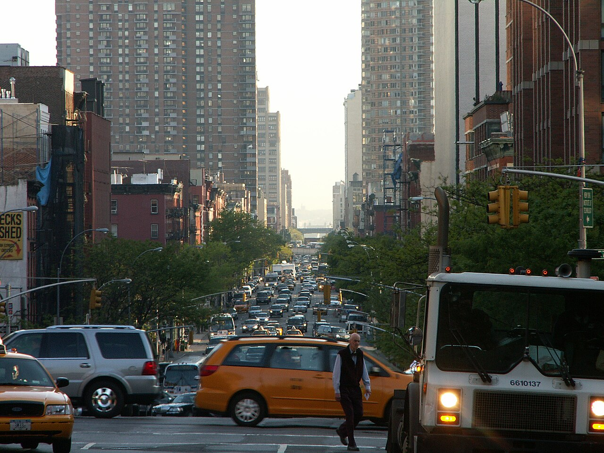

Daredevil
Matt Murdock lost his sight as a boy and gained everything else. This page works the way he does: tap anywhere and listen for what comes back.
Walk Hell's Kitchen72 bpm, steady. He'd know if you were lying.
A lawyer who sees by sound
Matt Murdock grew up in Hell's Kitchen, the son of a boxer named Battlin' Jack Murdock. He was still a boy when he pushed an old man out of the path of a truck and a canister of radioactive waste struck his eyes.
He lost his sight. Everything else sharpened: he hears heartbeats through walls, reads print by touch, and smells a lie of omission.
He gained a radar sense. Sound strikes the world and comes back as shape. Rooftops, rain and faces arrive as outlines, never as colour.
He kept two jobs. By day, a defence attorney at Nelson & Murdock. By night, a man in red who trained under a blind master called Stick.
Created by Stan Lee and Bill Everett. First seen in Daredevil #1, April 1964.
Sixty years, ten runs
Where to start reading. Creators and years only; find the books at your library or comic shop.
- 1964The beginningStan Lee & Bill EverettIssue #1: the accident, the father, the first costume.
- 1979–83Elektra and the HandFrank Miller & Klaus JansonThe run that turned a swashbuckler into noir.
- 1986Born AgainFrank Miller & David MazzucchelliThe Kingpin learns who he is and takes everything.
- 1986–91The Nocenti yearsAnn Nocenti & John Romita Jr.Strange, political and underrated.
- 1993The Man Without FearFrank Miller & John Romita Jr.The origin, told again, harder.
- 1998Guardian DevilKevin Smith & Joe QuesadaFaith, a baby and a very bad week.
- 2001–06UnmaskedBrian Michael Bendis & Alex MaleevThe tabloids out him. He denies it in court.
- 2006–09The Devil in Cell-Block DEd Brubaker & Michael LarkMatt starts in prison and ends somewhere worse.
- 2011–15The light runMark Waid, Paolo Rivera, Marcos Martín & Chris SamneeProof the character can smile.
- 2019–23To Heaven Through HellChip Zdarsky & Marco ChecchettoA death on his hands and a trial of conscience.
Rogues & allies, by heartbeat
Matt knows people by their pulse before he knows their faces. Pick someone and listen.
Foggy Nelson
His law partner and best friend since law school. Hears everything, forgives most of it.
Hell's Kitchen is a real place
West 34th to 59th Street, Eighth Avenue to the Hudson. Walk-ups and fire escapes, theatres and all-night bars: the neighborhood Matt Murdock never left. Tap a photograph to bring back its colour.




